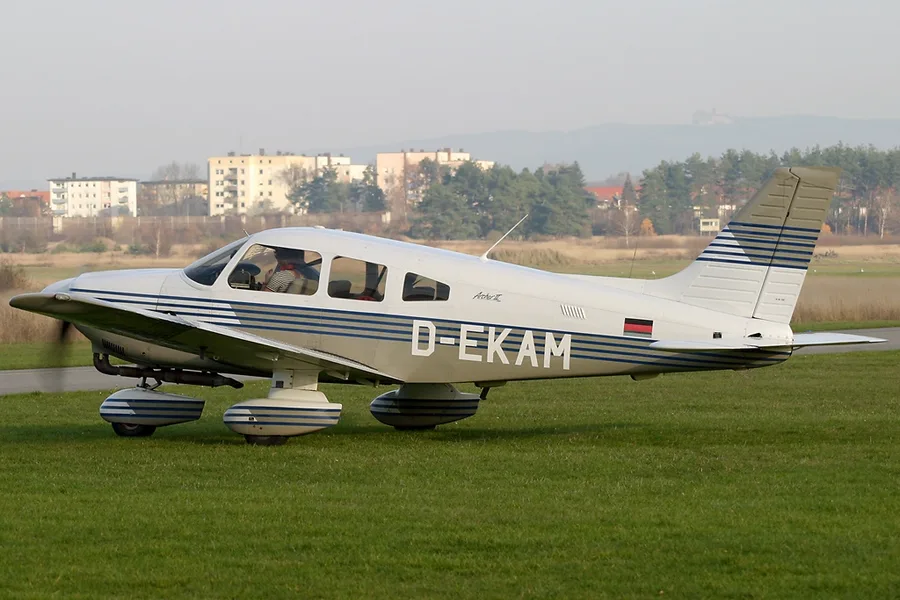

Piper / Cessna Midair Collision, Pahokee FL
Two flight-school aircraft collide on short final at a non-towered Florida airport; both land safely December 9, 2024, 16:30 EST · short final approach, Palm Beach County Glades Airport (PHK), Pahokee, FloridaMid-air collision
All 5 occupants uninjured, both aircraft landed safely
Case summary
Both student pilots were watching their own approach, not each other, until the Cessna's wing was already over the Piper's cabin.

SkyBlue Aviation · instructional flight
What happened
Source: NTSB Final Report (excerpt)The instructor onboard the low-wing Piper reported that, during final approach for a third landing, about 300 to 350 ft above ground level, he heard a "crunching metal noise" and realized that another airplane had collided with the cabin roof from above. He was able to continue and land on the runway. He had been making position reports on the airport's common traffic advisory frequency, and remembered a Cessna making a "short approach" report during their previous pattern — but heard nothing during the accident pattern. The pilot and instructor onboard the high-wing Cessna reported that they had completed one full-stop and two touch-and-go landings. During the fourth approach, the student pilot in the rear seat yelled as he saw "something big" on the left side of the airplane. The pilot pulled back on the control yoke, but it was too late — contact was already made. The instructor took control and landed uneventfully. Review of ADS-B data revealed that the Piper flew a wider left traffic pattern and the Cessna flew a tighter left traffic pattern before the two airplanes converged on short final approach.
Why it happened
Source: NTSB Final Report"The pilots' failure to see and avoid the other airplane, which resulted in a midair collision during short final approach."
- Piper flight crew's failure to monitor for and see the other airplane in the pattern (NTSB finding: "Monitoring other aircraft – Flight crew")
- Cessna flight crew's failure to monitor for and see the other airplane in the pattern (NTSB finding: "Monitoring other aircraft – Flight crew")
- The Piper flying a wider left traffic pattern while the Cessna flew a tighter one, converging the two flightpaths on short final
- Non-towered airport with self-announced CTAF position reports — both crews reported transmitting, but neither crew heard the other's pattern calls
Photos & media (3)
NTSB docket investigation photographs, ERA25LA072 (courtesy FAA), plus reference file photos of each aircraft model (Wikimedia Commons)The instructor onboard the low-wing Piper reported that, during final approach for a third landing, about 300 to 350 ft above ground level, he heard a "crunching metal noise" and realized that another airplane had collided with the cabin roof from above. He was able to continue and land on the runway. He had been making position reports on the airport's common traffic advisory frequency, and remembered a Cessna making a "short approach" report during their previous pattern — but heard nothing during the accident pattern. The pilot and instructor onboard the high-wing Cessna reported that they had completed one full-stop and two touch-and-go landings. During the fourth approach, the student pilot in the rear seat yelled as he saw "something big" on the left side of the airplane. The pilot pulled back on the control yoke, but it was too late — contact was already made. The instructor took control and landed uneventfully. Review of ADS-B data revealed that the Piper flew a wider left traffic pattern and the Cessna flew a tighter left traffic pattern before the two airplanes converged on short final approach.
"The pilots' failure to see and avoid the other airplane, which resulted in a midair collision during short final approach."
- Piper flight crew's failure to monitor for and see the other airplane in the pattern (NTSB finding: "Monitoring other aircraft – Flight crew")
- Cessna flight crew's failure to monitor for and see the other airplane in the pattern (NTSB finding: "Monitoring other aircraft – Flight crew")
- The Piper flying a wider left traffic pattern while the Cessna flew a tighter one, converging the two flightpaths on short final
- Non-towered airport with self-announced CTAF position reports — both crews reported transmitting, but neither crew heard the other's pattern calls